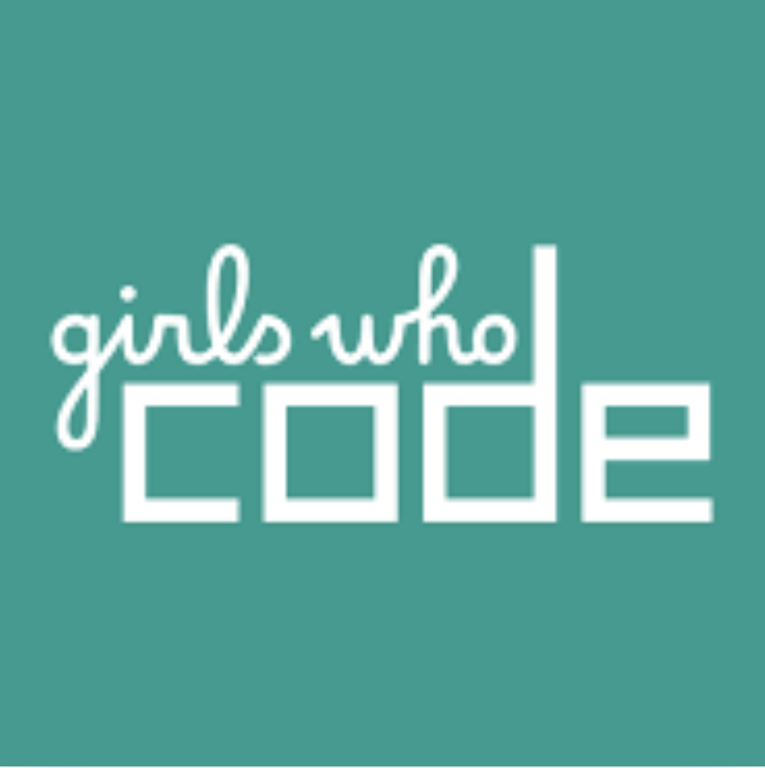

Undergraduate Research
Aug 2024 - May 2025
• Collaborated with Sandia National Labs to build trajectory prediction model
• Developed Python (Pandas, Matplotlib, NumPy) testing functions to evaluate model accuracy

Open Source
May 2025 - Present
• Contributing to Python/C++ geospatial analytics library developed by Sandia National Labs
• Updating build tests involving Matplotlib and NumPy for image comparison

GWC Teaching Assistant
May 2024 - Aug 2024
• Led lessons for 50-60 students on game design with JavaScript (p5.js & p5.play)
• Coordinated events with corporate sponsors (Bank of America, Synchrony, MetLife)